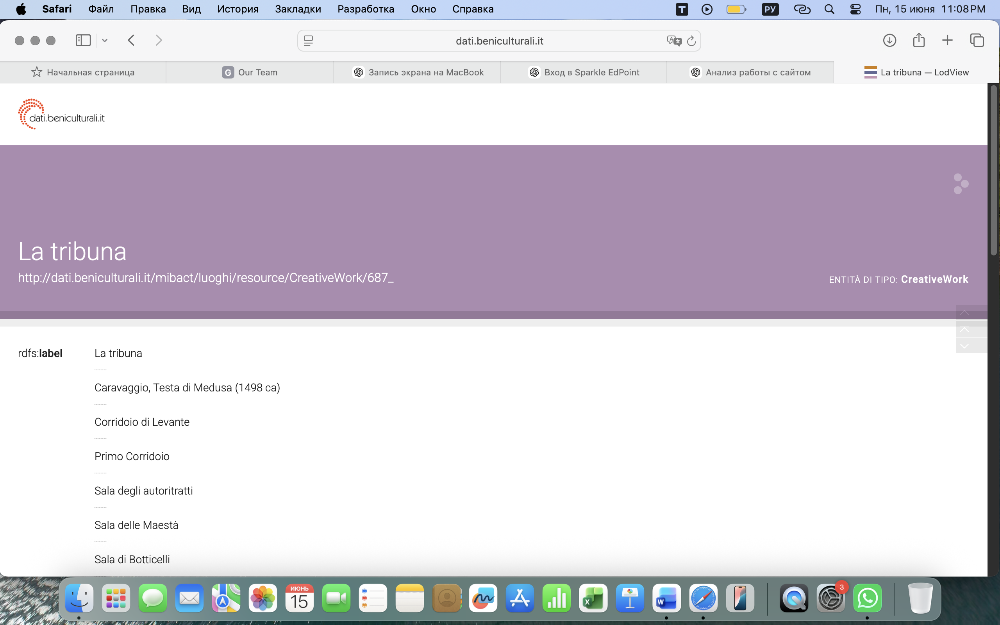
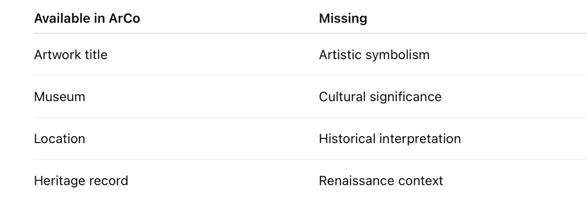

How We Identified the Information Gaps
This section explains how the main information gaps were identified in the ArCo representation of the selected Botticelli painting. The analysis compares information directly represented in the RDF description of the anchor resource with information that appears indirectly in related photographic resources, and cross-checks the findings with LLM-assisted review.
https://w3id.org/arco/resource/HistoricOrArtisticProperty/1201008107
1. Gap — Missing structured philosophical / interpretative context
The first gap concerns interpretative and philosophical context associated with
Botticelli's work. We checked whether concepts such as
Neoplatonism
are modelled through a-cd:hasSubject or similar properties.
SPARQL evidence — Query 4
See Query 4 (UNION: direct relations vs photographic labels).
Placeholder. Insert Query 4 result table here after running at the endpoint.

Interpretation
When philosophical entities appear repeatedly in photographic labels but not as direct
semantic relations, the knowledge exists in the dataset but is not represented at the
right level. The proposed enrichment adds explicit
a-cd:hasSubject relations (see
RDF Enrichment).
2. Gap — No direct triples linking the painting to Neoplatonism
The second gap was verified by excluding rdfs:seeAlso and searching only
among direct properties of the anchor resource.
SPARQL evidence — Query 6
See Query 6.
Placeholder. Expected: empty result set.
Interpretation
The absence of results confirms that Neoplatonism and related entities are not directly linked to the painting through structured properties. This gap motivates the RDF enrichment discussed in the next sections.
3. LLM-assisted gap analysis
Three LLMs were asked which contextual information about Botticelli is commonly discussed in art history but may be missing from cultural heritage knowledge graphs. Details of prompts and techniques are in LLM Prompts.
| LLM | Main suggestions |
|---|---|
| ChatGPT | Neoplatonism, Renaissance Humanism, artistic symbolism |
| Claude | Medici intellectual circle, philosophical influences, symbolism |
| Gemini | Mythological interpretation, cultural context, Renaissance philosophy |
Although wording differed, all models pointed to philosophical and interpretative themes not typically encoded as catalogue fields. Among candidates, Neoplatonism was selected for enrichment because it recurred across models and is supported by art historical literature (SEP — Neoplatonism).
Summary of missing information
| Category | Missing information | Importance |
|---|---|---|
| Philosophy | Neoplatonism | High |
| Intellectual context | Renaissance Humanism | High |
| Social context | Medici circle | Medium |
| Symbolism | Allegorical readings of major works | High |

Final conclusion
Gap identification combined SPARQL evidence (Queries 4 and 6) with LLM comparison. The proposed enrichment aims to transform implicit textual information into explicit, machine-readable RDF triples using existing ArCo vocabulary.